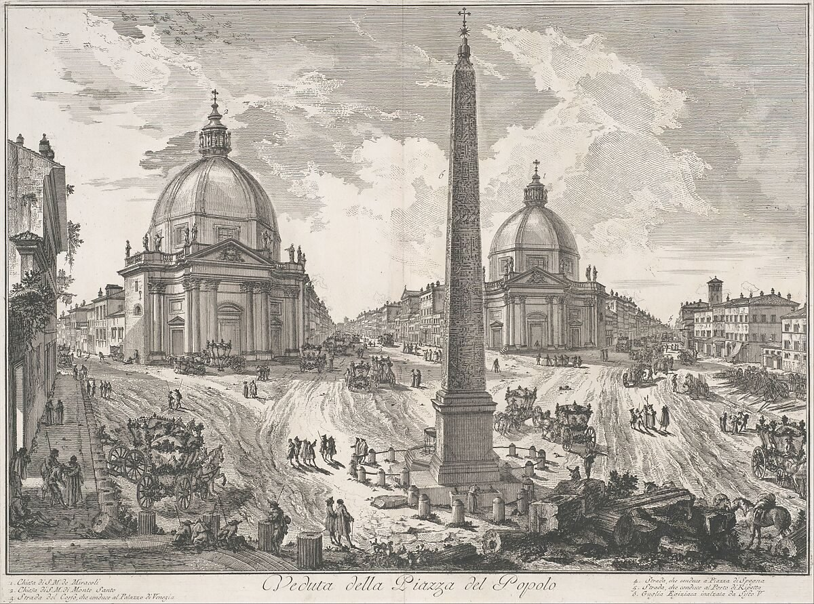
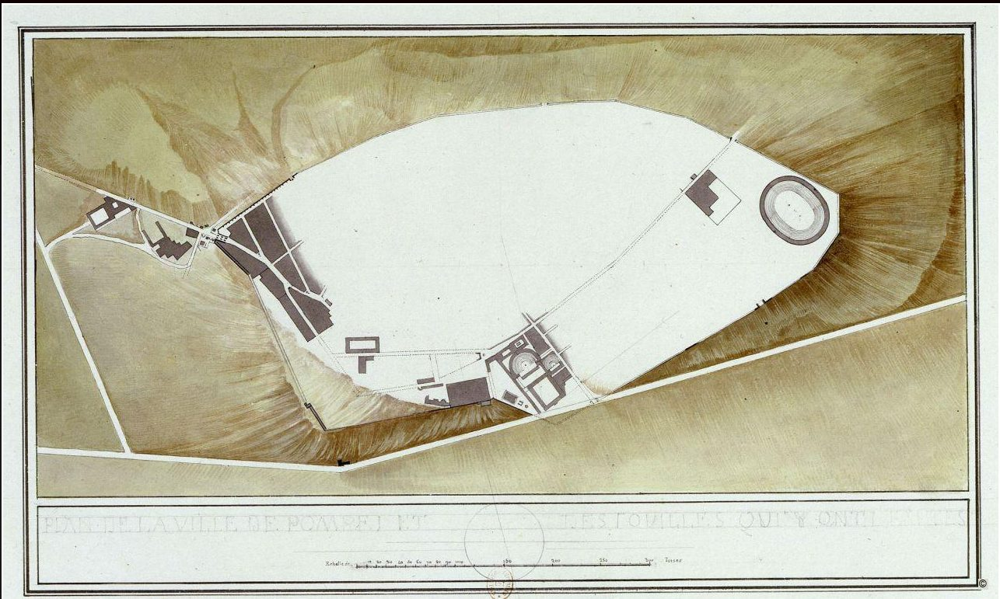
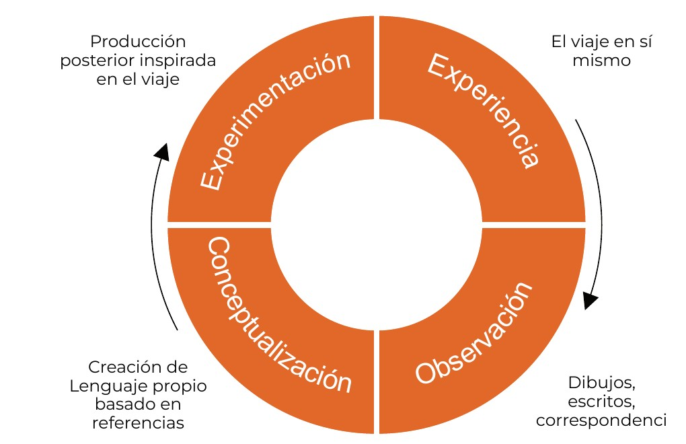

Marco teórico
Estado de la cuestión, concepto de Grand Tour, aprendizaje experiencial y definición de viaje iniciático.
Breve estado de la cuestión
La recopilación de información para este trabajo ha requerido recurrir a fuentes diversas, con enfoques muy distintos sobre el Grand Tour y el viaje arquitectónico.
El carácter disperso de los casos de estudio impide hablar de una bibliografía específica que abarque la práctica del Grand Tour en su evolución a lo largo de los siglos. Existen publicaciones relevantes centradas en épocas o viajeros concretos, pero no una visión de conjunto de esa evolución; ese vacío es el que este trabajo pretende contribuir a llenar.
El estudio del Grand Tour y, de forma más amplia, del viaje como parte de la formación del arquitecto ha sido abordado desde diferentes perspectivas historiográficas y metodológicas. Algunos trabajos se han centrado en reconstruir los itinerarios y experiencias de los viajeros a partir de fuentes documentales; otros han analizado la influencia que los lugares y arquitecturas visitados pudieron ejercer sobre su producción posterior. Paralelamente, diversos autores han estudiado la transformación del Grand Tour histórico y su continuidad, bajo nuevas formas e intereses, en el viaje arquitectónico contemporáneo.
El presente estado de la cuestión se articula en torno a estas líneas de investigación, prestando especial atención a aquellos trabajos que permiten, por una parte, comprender la evolución histórica del viaje arquitectónico y, por otra, establecer métodos para reconstruir y analizar los itinerarios realizados y su posible influencia sobre la práctica arquitectónica.
Uno de los trabajos más relevantes, tanto en el plano historiográfico como en el metodológico, es el desarrollado en el marco del proyecto de investigación The Grand Tour Project de la Universidad de Stanford, dirigido por la profesora Giovanna Ceserani. De entre sus resultados, la publicación más relevante para este trabajo es el artículo «British Travelers in Eighteenth-Century Italy: The Grand Tour and the Profession of Architecture»1.
El equipo del proyecto reconstruye los viajes en formato SIG a partir de la digitalización del Dictionary of British and Irish Travellers in Italy, 1701–1800, compilado por John Ingamells a partir del archivo de Brinsley Ford, que a su vez recoge correspondencia, diarios y otros documentos de los propios viajeros. De este modo, sitúa en el espacio y en el tiempo a miles de viajeros, entre ellos un buen número de arquitectos.
Esta forma de trabajar es la principal inspiración de la metodología de este TFG, cuya herramienta central es la reconstrucción de los viajes en formato SIG para facilitar su representación y su análisis.
En el plano historiográfico, el artículo resulta además útil para caracterizar el viaje clásico y, en particular, el viaje de John Soane, al que dedica una atención especial.
Por otra parte, en el artículo «China Receives Utzon: The Role of Jørn Utzon’s 1958 Study Trip to China in His Architectural Maturity»2, Chen-Yu Chiu reconstruye, mediante entrevistas y trabajo de archivo, el viaje de Utzon por China en 1958. A partir de esa reconstrucción, establece conexiones entre la arquitectura que Utzon visitó y la que proyectó después, utilizando el itinerario como base para identificarlas.
Este trabajo se toma como referente por su método para relacionar la arquitectura visitada en un viaje concreto con la proyectada posteriormente por el propio viajero, formulando hipótesis sobre posibles inspiraciones y referencias a través de la comparación de composiciones, elementos ornamentales y elementos constructivos.
Finalmente, en el artículo «Roma–Passaic–Las Vegas: del Grand Tour al viaje arquitectónico contemporáneo»3, Smara Gonçalves Diez analiza los intereses que han movido el viaje arquitectónico a lo largo de la historia, con especial atención al viaje contemporáneo, cuyo momento inaugural sitúa en el viaje de Robert Venturi, Denise Scott Brown y Steven Izenour al strip de Las Vegas en 1968.
Este artículo es especialmente influyente para el presente trabajo porque esboza una primera división histórica de los tipos de viaje y expone sus características principales. Además, da fuerza teórica a la práctica contemporánea, al justificar el interés de las nuevas generaciones de arquitectos por visitar ciudades no solo por su valor monumental, sino también por una curiosidad antropológica, cuestión que este trabajo también aborda.
De estos trabajos se derivan los tres pilares del TFG: de Ceserani, el método de reconstrucción espacial y temporal de los itinerarios; de Chiu, el método para contrastar lo visitado con la obra posterior; y de Gonçalves Diez, la clasificación de partida de los tipos de viaje. A ellos se suma el estudio de Homiński sobre los viajes de estudios, comentado en el apartado siguiente, que sirve de apoyo para relacionar el tiempo dedicado a cada lugar con su repercusión posterior.
no se reproduce en la versión web.Ver en la fuente ↗
Concepto de Grand Tour
Origen de la idea
El término Grand Tour fue acuñado por el clérigo inglés Richard Lassels en The Voyage of Italy (1670)4, donde describía los viajes que los jóvenes de la aristocracia y la alta burguesía británicas realizaban a Italia para conocer de primera mano el arte clásico y renacentista.
Esta práctica gozaba de un gran reconocimiento social como garantía de la calidad de la educación de estos jóvenes. Del viaje se esperaba, además del contacto directo con el arte clásico y renacentista, la formación de una red de contactos entre jóvenes de la alta sociedad que favoreciera futuros negocios, encargos y colaboraciones.
Personajes destacados de todas las disciplinas realizaron un Grand Tour durante estos siglos; entre los más conocidos figuran Adam Smith, Goethe, Mary Shelley o la familia Mozart.
Hacer este viaje suponía una licencia de libertad para los jóvenes, que con él consagraban su entrada en la vida adulta. Era, además, un signo de estatus prácticamente imprescindible para alcanzar el éxito en la vida profesional posterior.
Conviene matizar, sin embargo, quién tenía acceso a este viaje. La figura canónica del grand tourist corresponde a un joven varón de las clases privilegiadas, una marca de género que el español tiende a ocultar cuando se habla genéricamente de «jóvenes». La movilidad y la formación de las mujeres estaban sujetas a fuertes limitaciones sociales y económicas, y su acceso a la profesión de arquitecto fue, durante todo ese periodo, prácticamente inexistente. Ello no impidió que hubiera viajeras (el propio equipo de Ceserani las incluye entre los participantes del Grand Tour), y estudios recientes 5 6 se han preguntado precisamente en qué se diferenciaban sus viajes de los masculinos. Aunque este trabajo no aborda la cuestión en profundidad, el hecho de que todos sus casos de estudio sean hombres debe leerse también a la luz de estas limitaciones.


El Grand Tour de los arquitectos
En sus inicios, el Grand Tour no era un viaje de arquitectura. Lo que se iba a ver era, ante todo, la Antigüedad clásica (sus ruinas, sus esculturas, los lugares conocidos a través de los textos griegos y latinos) y el arte del Renacimiento, a lo que se sumaban las cortes, las lenguas y las costumbres del continente. La arquitectura formaba parte de ese programa como un elemento más del legado clásico, contemplado por aficionados y coleccionistas más que estudiado por profesionales.
A lo largo del siglo XVIII esta situación cambia y el viaje cristaliza en una cuestión específicamente arquitectónica. Los arquitectos empiezan a viajar como profesionales: miden y dibujan las ruinas, se forman en las academias italianas y compiten en sus concursos, y actúan como guías y tutores de otros viajeros, con quienes tejen relaciones que condicionarán sus carreras a su regreso. Las academias institucionalizan este viaje mediante becas de estancia en Roma, como las de los pensionados de la Académie de France à Rome, fundada en 1666, la Real Academia de España en Roma, fundada en 1873, o la Academia Americana en Roma, fundada en 1894.
Los descubrimientos de Herculano (1738) y Pompeya (1748) y el redescubrimiento de los templos griegos de Paestum refuerzan el giro: el viaje deja de ser solo una peregrinación al arte del pasado y se convierte en una fuente directa de modelos, proporciones y repertorios ornamentales para la arquitectura neoclásica. Como resume el equipo de Ceserani:
«No todos los que hicieron el Grand Tour llegaron a ser arquitectos de éxito, pero casi todos los arquitectos británicos de éxito del siglo XVIII habían hecho el Grand Tour. Fue una experiencia educativa crucial» (trad. propia)7.


La deriva de la práctica
Aunque el Grand Tour en su definición original no sobrevivió como tal, el viaje como herramienta de formación del arquitecto conserva en buena medida el espíritu que describía Lassels hace más de tres siglos y medio. La desaparición del viaje institucionalizado no supuso la desaparición del viaje formativo, sino su transformación: cambiaron los destinos, los medios de transporte, los modos de registrar lo visto y, sobre todo, aquello que los arquitectos iban a buscar.
Tras el siglo XVIII no puede reconocerse una figura institucionalizada con la fuerza del Grand Tour clásico, pero sí pueden considerarse los viajes realizados por arquitectos de todas las épocas, hasta la actualidad, como prácticas herederas de aquel. Por ello, este trabajo analiza dicha evolución a partir del cambio de referencias en los viajes de los arquitectos, y valora su importancia confrontando lo visitado con la producción posterior de cada uno.
no se reproduce en la versión web.Ver en la fuente ↗
La importancia del aprendizaje experiencial
Más allá de los destinos y de los modelos que proporcionaba, el Grand Tour fue, ante todo, una experiencia formativa basada en la observación directa de la arquitectura. Frente al conocimiento adquirido en libros, tratados o grabados, el viaje permitía recorrer los espacios, analizar las construcciones en su contexto y contrastar las ideas previas con la realidad. Ese tránsito de lo vivido a lo aprendido es precisamente el objeto de la teoría del aprendizaje experiencial (Experiential Learning Theory), formulada en 1984 por David A. Kolb, doctor en psicología social por la Universidad de Harvard8. Según Kolb, la experiencia no se convierte en conocimiento de forma inmediata, sino a través de un ciclo de cuatro fases:
Experiencia concreta: adquisición de un conocimiento no mediado, a través de los sentidos.
Observación reflexiva: revisión distanciada de lo experimentado, que permite confrontar lo que se esperaba con la experiencia en sí.
Conceptualización abstracta: la reflexión da paso a la modificación o generación de una idea que tiene su origen en la vivencia empírica.
Experimentación activa: la idea se pone a prueba al volver a interactuar con el mundo real, lo que reinicia el ciclo.
Aunque Kolb desarrolló su teoría para contextos pedagógicos modernos, algunos investigadores han trasladado su estructura a los viajes de estudios. Es el caso de Homiński, que en su artículo «Study tours in teaching architecture and urbanism: improving the itinerary»9 interpreta la visita arquitectónica como experiencia en el sentido de Kolb. Su estudio analizó los trabajos de 40 estudiantes que realizaron tres viajes de estudios por ciudades europeas y comparó el tiempo dedicado a cada edificio con la frecuencia con que este era elegido después para un estudio en profundidad. En varios edificios, las visitas de más de una hora se asociaron a una mayor presencia en esos trabajos. Sus resultados apuntan, por tanto, a la relevancia de la experiencia directa como punto de partida, aunque sin llegar a verificar el ciclo completo.
El propio estudio de Homiński matiza esta relación. Los grandes proyectos urbanos, pese a recibir visitas largas, apenas aparecieron en los estudios en profundidad por parte de los estudiantes, algo que Homiński atribuye tentativamente a la dificultad de percibir intervenciones que exceden la escala de una obra singular y al mayor tiempo que requiere explorarlas. A la inversa, varios edificios con visitas breves fueron muy elegidos, lo que indica que intervienen otros factores, como la accesibilidad de la información, la moda, los intereses de los estudiantes, la influencia de los compañeros o la formación previa. Desde la óptica de Kolb, cabe interpretar que el tiempo de exposición no basta por sí solo para que la experiencia concreta alimente las fases posteriores del ciclo: parece necesario, además, que el objeto sea aprehensible para el visitante.


La teoría del aprendizaje experiencial de Kolb ofrece un marco interpretativo desde el que comprender el potencial formativo del Grand Tour. El contacto directo con la arquitectura durante el viaje puede relacionarse con la experiencia concreta; los dibujos, las anotaciones y la correspondencia permiten identificar procesos de observación y reflexión; y la elaboración de criterios arquitectónicos propios puede vincularse con la conceptualización abstracta. Finalmente, la aplicación de esos conocimientos en proyectos y obras posteriores encuentra un paralelismo con la experimentación activa. Esta correspondencia no implica que todos los viajeros completaran necesariamente las cuatro fases, sino que permite reconocer distintas dimensiones del aprendizaje asociadas al viaje. Desde esta perspectiva, el Grand Tour puede entenderse no solo como una experiencia de conocimiento y observación de la arquitectura, sino también como un proceso de reflexión y transformación del pensamiento arquitectónico, cuyas posibles consecuencias pueden rastrearse en la producción posterior de sus protagonistas.
| Fases del ciclo de Kolb | Analogía con el Grand Tour |
|---|---|
| Experiencia concreta | El viaje en sí mismo |
| Observación reflexiva | Cuadernos de viaje y correspondencia |
| Conceptualización abstracta | Generación de un lenguaje propio a partir de las referencias |
| Experimentación activa | Producción posterior (consecuencia del viaje) |
El viaje iniciático
El aprendizaje experiencial permite comprender cómo el contacto directo con la arquitectura puede contribuir a la formación del arquitecto. Sin embargo, no todos los viajes tienen la misma trascendencia en su trayectoria. Mientras que algunos permiten ampliar conocimientos o incorporar nuevas referencias, otros pueden llegar a transformar profundamente la manera de observar, interpretar y proyectar la arquitectura. Es en este segundo caso donde adquiere especial relevancia el concepto de viaje iniciático.
A lo largo de su carrera, un arquitecto puede realizar viajes de distinta naturaleza: viajes de estudios o formativos, organizados para completar un aprendizaje reglado; viajes profesionales, vinculados a obras, concursos o encargos; y viajes de recreo, en los que la arquitectura ocupa un lugar secundario. Estas categorías no son excluyentes y pueden solaparse en un mismo viaje. El carácter iniciático, sin embargo, no constituye una categoría más dentro de esta clasificación, sino una condición que puede darse en cualquiera de ellas cuando el viaje representa un punto de inflexión en la trayectoria del arquitecto.
El término procede del sentido original del Grand Tour como rito de paso, pero aquí no se identifica necesariamente con el primer viaje tras los estudios ni con un viaje de juventud. Se entiende por viaje iniciático aquel que reúne tres condiciones: es un viaje anhelado y buscado deliberadamente para adquirir referencias nuevas, a menudo ajenas a la formación previa del arquitecto; supone un umbral en su trayectoria, de modo que puede hablarse de un antes y un después en su manera de mirar la arquitectura; y sus lecciones pueden rastrearse en su obra posterior.
La transformación de la mirada es, por tanto, una consecuencia del viaje iniciático, pero no basta por sí sola para definirlo: lo que lo caracteriza es su condición de umbral y la intención con la que se emprende. Por la misma razón, lo determinante no es la edad del viajero, sino el momento de su carrera en el que se produce el viaje. Esta definición es la que guía la selección de los casos de estudio.
no se reproduce en la versión web.Ver en la fuente ↗